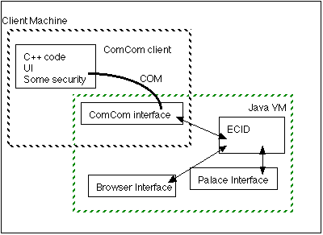

ComCom Design Meeting Notes
Last updated: 1998/08/07 by Bob
98/08/07 Karl - Original version.
Also see the ComCom Server Design
Also see the ComCom Client Design
Login and Connection Dialogue
- Make secure authenticated connection for server (use EC datacomm so that the server knows it really is me)
- Client sends list of requested traffic (EC DataComm)
- Stuff I want
- people and what they can have [ECID, list of message classes]
- minimal "profile"?
- Server dumps client's ECID from tables (if any)
- Client and server set up shared secret for authentication (EC DataComm)
- "real" shared secret for authenticated UDP "location" (client->server) messages
- "cheap" authentication (XOR or similar) for server->client traffic
- Server tells client what the "Time Out" X is
- Client listens for UDP traffic from server and displays it (UDP)
- server runs "cheap" XOR on message (hence not "clear")
- Client gets "location" messages from ElCid clients, signs them, XORs them (not "clear" again), and sends a UDP message to server (UDP)
- Client->client2 request for permission (EC DataComm)
- Client2->server permission message [ECID, list of messages classes] (EC DataComm)
- "Time Out"
- If the server receives no traffic from a client in X amount of time (X should have a minimum and maximum), dump all the tables associated with that ECID
- Client can send PING to itself through the server as a timeout avoidance
- If the client receives no traffic from the server in X amount of time, reconnect (setps 1, 2, 3 & 4)
UDP Messages
- PING
- lets client know server is "up" (in case of no other traffic)
- also lets other clients with permission to receive them that your client is "online"
- LOGOUT
- shuts down server "connection" cleanly (dumps tables, etc.) (EC DataComm from client actually logging out to server)
- also lets clients who can get this message that you've gone "offline" (UDP from server to interested clients)
- "Here" - class for each "kind" of location
- URLS
- Palaces
- MOOs/MUDs
- etc.
Palace/MOO/URL Message Formats
- ECID is at location (lets client do "friends" at location)
- # of ECIDs at location
ComCom Client picture:
Client is:
- C++ program: UI and security for authetication with server
- Java object inside VM for ElCid communication
- UDP "high" volume traffic to server
- secure authenticated "low" volume traffic to server through EC DataComm
